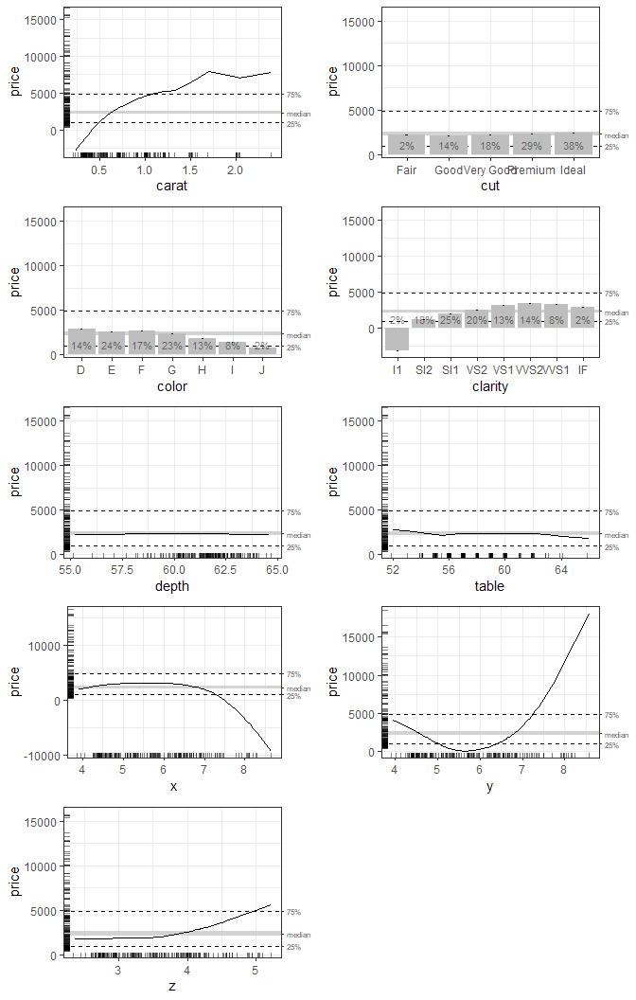

Accumulated Local Effects (ALE) were initially developed as a model-agnostic approach for global explanations of the results of black-box machine learning algorithms. ALE has two primary advantages over other approaches like partial dependency plots (PDP) and SHapley Additive exPlanations (SHAP): its values are not affected by the presence of interactions among variables in a model and its computation is relatively rapid. This package rewrites the original code from the {ALEPlot} package for calculating ALE data and it completely reimplements the plotting of ALE values. It also extends the original ALE concept to add bootstrap-based confidence intervals and ALE-based statistics that can be used for statistical inference.
For more details, see Okoli, Chitu. 2023. “Statistical Inference Using Machine Learning and Classical Techniques Based on Accumulated Local Effects (ALE).” arXiv. https://doi.org/10.48550/arXiv.2310.09877.
The ale package currently presents three main functions:
-
ale(): create data and plots for one-way ALE (single variables). ALE values may be bootstrapped. -
ale_ixn(): create data and plots for two-way ALE interactions. Bootstrapping of the interaction ALE values has not yet been implemented. -
model_bootstrap(): bootstrap an entire model, not just the ALE values. This function returns the bootstrapped model statistics and coefficients as well as the bootstrapped ALE values. This is the appropriate approach for small samples.
Documentation
You can obtain direct help for any of the package’s user-facing functions with the R help() function, e.g., help(ale). However, the most detailed documentation is found in the website for the most recent development version. There you can find several articles. We particularly recommend:
Installation
You can obtain the official releases from CRAN:
install.packages('ale)The CRAN releases are extensively tested and should have relatively few bugs. However, note that this package is still in beta stage. For the ale package, that means that there will occasionally be new features with changes in the function interface that might break the functionality of earlier versions. Please excuse us for this as we move towards a stable version that flexibly meets the needs of the broadest user base.
To get the most recent features, you can install the development version of ale from GitHub with:
# install.packages("pak")
pak::pak("Tripartio/ale")The development version in the main branch of GitHUb is always thoroughly checked. However, the documentation might not be fully up-to-date with the functionality.
Usage
Here is a simple example that demonstrates the usage of the model. First, we train a GAM model.
library(ale)
#> Loading required package: ggplot2
# Sample 1000 rows from the diamonds dataset (for a simple example).
# diamonds is included with ggplot2, which is imported by the ale package.
set.seed(0)
diamonds_sample <- diamonds[sample(nrow(diamonds), 1000), ]
# Split the dataset into training and test sets
# https://stackoverflow.com/a/54892459/2449926
set.seed(0)
train_test_split <- sample(
c(TRUE, FALSE), nrow(diamonds_sample), replace = TRUE, prob = c(0.8, 0.2)
)
diamonds_train <- diamonds_sample[train_test_split, ]
diamonds_test <- diamonds_sample[!train_test_split, ]
# Create a GAM model with flexible curves to predict diamond price
# Smooth all numeric variables and include all other variables
# Build model on training data, not on the full dataset.
gam_diamonds <- mgcv::gam(
price ~ s(carat) + s(depth) + s(table) + s(x) + s(y) + s(z) +
cut + color + clarity,
data = diamonds_train
)With a test dataset and a model object, we can create ALE data with the ale() function and then plot the ggplot plot objects.
# Create ALE data and plot it
ale_gam_diamonds <- ale(diamonds_test, gam_diamonds)
gridExtra::grid.arrange(grobs = ale_gam_diamonds$plots, ncol = 2)
Getting help
If you find a bug, please report it on GitHub. If you have a question about how to use the package, you can post it on Stack Overflow with the “ale” tag. I will follow that tag, so I will try my best to respond quickly. However, be sure to always include a minimal reproducible example for your usage requests. If you cannot include your own dataset in the question, then use one of the built-in datasets to frame your help request: var_cars, census, or diamonds.